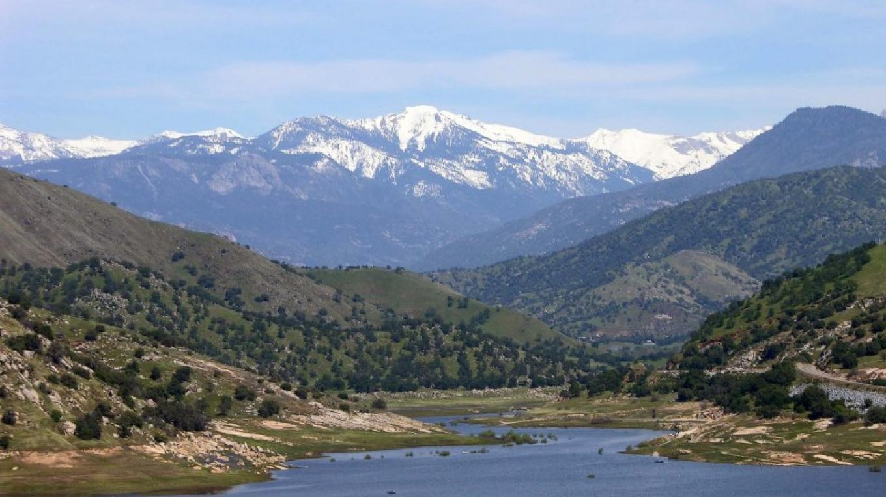

Tulare County Mountain Area Plan Three Rivers, Badger, Camp Nelson, Wilsonia, and others
ABOUT THE PLAN
We are fourth year City and Regional Planning students studying at Cal Poly, San Luis Obispo. For our CRP 410 class taught by Professor Cornelius Nuworsoo we have been tasked with reworking the Three Rivers Community Plan to best meet the needs and wants of the community.
The Class

The class involves two quarters or twenty weeks of hard work, research, studying, and problem solving to figure out what the needs of the community are, how the current community plan meets or does not meet such needs, before rewriting the community plan to best meet what the members of the community deserve from their hometown.
What is a Community Plan and What Does it Do?
A community plan sets forth goals, objectives, policies, and programs to address specific
issues related to a particular community.
Vision for the Community's Future
Three Rivers has not updated their community plan since 2018.
Community Outreach Opportunities
Our planners are to provide frequent opportunities for community participation throughout the planning process. The final product will reflect the aspirations of Three Rivers' residents.